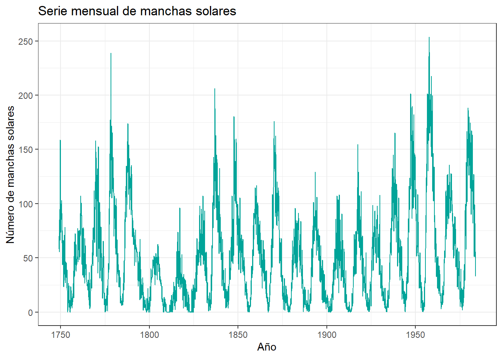
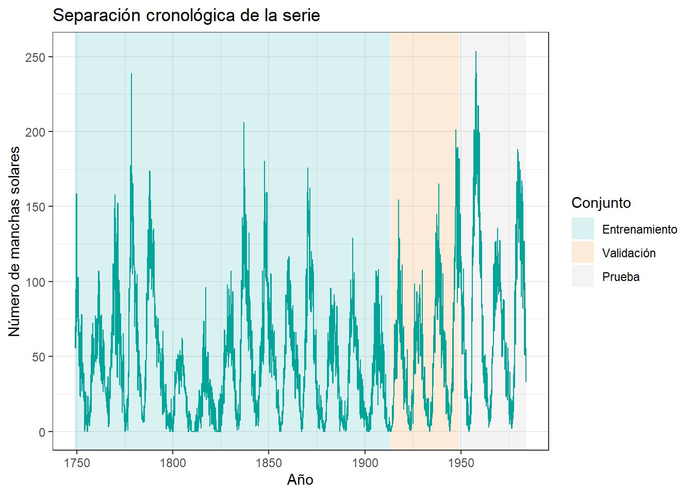
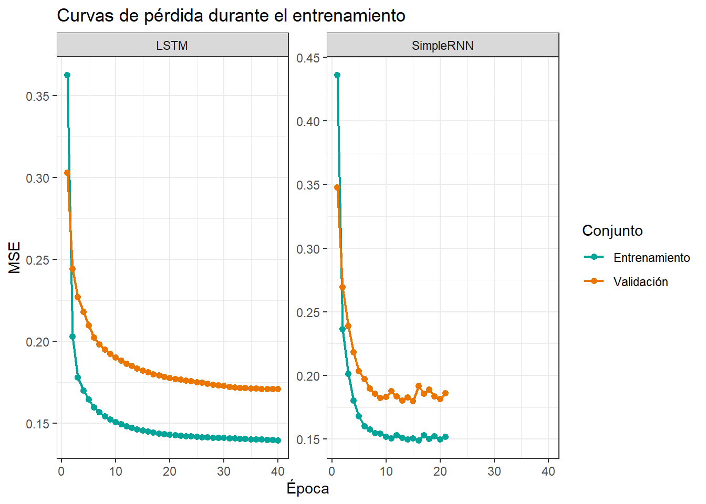
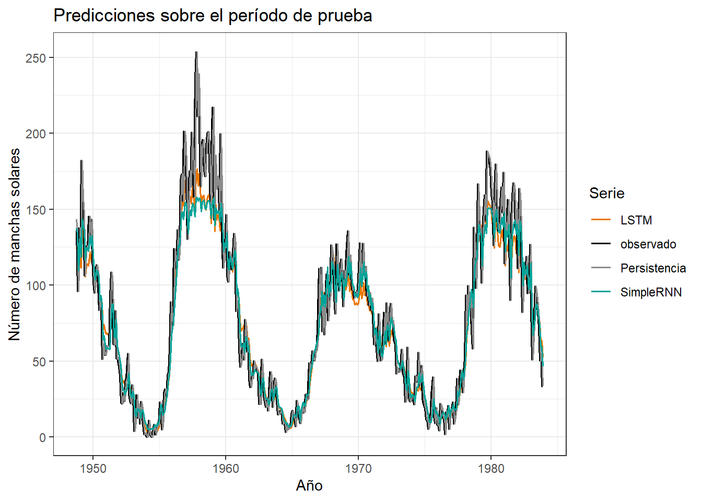

# Librerías principales
library(tensorflow)
library(keras)
library(tidyverse)
# Reproducibilidad
set.seed(100)
tensorflow::tf$random$set_seed(100)
# Modo rápido para ejecutar el documento en CPU
modo_rapido <- FALSEDeep Learning
RNN y LSTM: pronóstico de series temporales en R
1 Introducción
Exploraremos un ejemplo de pronóstico de series temporales utilizando redes recurrentes en keras. El objetivo será usar los últimos valores observados de la serie para predecir el valor del siguiente período.
En términos secuenciales, cada muestra tendrá la forma:
\left[x^{(t-p+1)}, \ldots, x^{(t)}\right] \longrightarrow y^{(t+1)},
donde p corresponde a la longitud de la ventana de entrada. Este es un problema muchos a uno: la red recibe varios pasos de tiempo y entrega una única predicción.
2 Librerías y datos
Usaremos la serie sunspots, disponible directamente en R. Esta serie contiene observaciones mensuales del número de manchas solares y nos permite construir un problema supervisado sin descargar datos externos.
sunspots_tbl <- tibble(
indice = seq_along(as.numeric(sunspots)),
anio = as.numeric(time(sunspots)),
manchas = as.numeric(sunspots)
)
glimpse(sunspots_tbl)Rows: 2,820
Columns: 3
$ indice <int> 1, 2, 3, 4, 5, 6, 7, 8, 9, 10, 11, 12, 13, 14, 15, 16, 17, 18,…
$ anio <dbl> 1749.000, 1749.083, 1749.167, 1749.250, 1749.333, 1749.417, 17…
$ manchas <dbl> 58.0, 62.6, 70.0, 55.7, 85.0, 83.5, 94.8, 66.3, 75.9, 75.5, 15…3 Exploración
sunspots_tbl %>%
ggplot(aes(x = anio, y = manchas)) +
geom_line(color = "#00A499", linewidth = 0.5) +
labs(
title = "Serie mensual de manchas solares",
x = "Año",
y = "Número de manchas solares"
) +
theme_bw()
En una serie temporal el orden es parte de la información. Por eso, no aplicaremos una partición aleatoria. Separaremos entrenamiento, validación y prueba respetando la dirección del tiempo.
4 Separación temporal
n_obs <- nrow(sunspots_tbl)
train_end <- floor(0.70 * n_obs)
val_end <- floor(0.85 * n_obs)
sunspots_tbl <- sunspots_tbl %>%
mutate(
conjunto = case_when(
indice <= train_end ~ "Entrenamiento",
indice <= val_end ~ "Validación",
TRUE ~ "Prueba"
),
conjunto = factor(conjunto, levels = c("Entrenamiento", "Validación", "Prueba"))
)
sunspots_tbl %>%
count(conjunto) %>%
mutate(proporcion = n / sum(n))# A tibble: 3 × 3
conjunto n proporcion
<fct> <int> <dbl>
1 Entrenamiento 1973 0.700
2 Validación 424 0.150
3 Prueba 423 0.15 regiones <- tibble(
conjunto = factor(
c("Entrenamiento", "Validación", "Prueba"),
levels = c("Entrenamiento", "Validación", "Prueba")
),
xmin = c(min(sunspots_tbl$anio), sunspots_tbl$anio[train_end + 1], sunspots_tbl$anio[val_end + 1]),
xmax = c(sunspots_tbl$anio[train_end], sunspots_tbl$anio[val_end], max(sunspots_tbl$anio))
)
sunspots_tbl %>%
ggplot(aes(x = anio, y = manchas)) +
geom_rect(
data = regiones,
aes(xmin = xmin, xmax = xmax, ymin = -Inf, ymax = Inf, fill = conjunto),
inherit.aes = FALSE,
alpha = 0.15
) +
geom_line(color = "#00A499", linewidth = 0.45) +
scale_fill_manual(values = c("#00A499", "#EA7600", "gray70")) +
labs(
title = "Separación cronológica de la serie",
x = "Año",
y = "Número de manchas solares",
fill = "Conjunto"
) +
theme_bw()
Los datos futuros no pueden utilizarse para ajustar transformaciones del pasado. Por eso, la normalización se estima solo con el conjunto de entrenamiento y luego se aplica sin cambios a validación y prueba.
5 Normalización
train_values <- sunspots_tbl %>%
filter(conjunto == "Entrenamiento") %>%
pull(manchas)
train_mean <- mean(train_values)
train_sd <- sd(train_values)
normalizar <- function(x) {
(x - train_mean) / train_sd
}
invertir_normalizacion <- function(x) {
x * train_sd + train_mean
}
sunspots_tbl <- sunspots_tbl %>%
mutate(manchas_norm = normalizar(manchas))
tibble(
media_entrenamiento = train_mean,
sd_entrenamiento = train_sd
)# A tibble: 1 × 2
media_entrenamiento sd_entrenamiento
<dbl> <dbl>
1 45.1 37.96 Definición del problema secuencial
Ahora construiremos ventanas temporales. Cada ventana tendrá window_size pasos de tiempo y una sola característica: el valor normalizado de la serie.
window_size <- 36
horizon <- 1
crear_ventanas <- function(valores, tiempos, window_size, horizon = 1) {
n <- length(valores)
posiciones_objetivo <- seq(window_size + horizon, n)
n_muestras <- length(posiciones_objetivo)
x <- array(NA_real_, dim = c(n_muestras, window_size, 1))
y <- numeric(n_muestras)
tiempo_objetivo <- numeric(n_muestras)
indice_objetivo <- integer(n_muestras)
for (i in seq_along(posiciones_objetivo)) {
pos_y <- posiciones_objetivo[i]
pos_x <- (pos_y - horizon - window_size + 1):(pos_y - horizon)
x[i, , 1] <- valores[pos_x]
y[i] <- valores[pos_y]
tiempo_objetivo[i] <- tiempos[pos_y]
indice_objetivo[i] <- pos_y
}
list(
x = x,
y = y,
tiempo_objetivo = tiempo_objetivo,
indice_objetivo = indice_objetivo
)
}
ventanas <- crear_ventanas(
valores = sunspots_tbl$manchas_norm,
tiempos = sunspots_tbl$anio,
window_size = window_size,
horizon = horizon
)
dim(ventanas$x)[1] 2784 36 1La dimensión de x se interpreta como:
- muestras: cantidad de ventanas disponibles;
- pasos de tiempo: largo de cada ventana;
- características: número de variables observadas en cada paso.
En este ejemplo, la tercera dimensión es igual a 1 porque usamos solo la serie de manchas solares.
train_idx <- ventanas$indice_objetivo <= train_end
val_idx <- ventanas$indice_objetivo > train_end & ventanas$indice_objetivo <= val_end
test_idx <- ventanas$indice_objetivo > val_end
x_train <- ventanas$x[train_idx, , , drop = FALSE]
y_train <- ventanas$y[train_idx]
x_val <- ventanas$x[val_idx, , , drop = FALSE]
y_val <- ventanas$y[val_idx]
x_test <- ventanas$x[test_idx, , , drop = FALSE]
y_test <- ventanas$y[test_idx]
tibble(
conjunto = c("Entrenamiento", "Validación", "Prueba"),
muestras = c(dim(x_train)[1], dim(x_val)[1], dim(x_test)[1]),
pasos_de_tiempo = c(dim(x_train)[2], dim(x_val)[2], dim(x_test)[2]),
caracteristicas = c(dim(x_train)[3], dim(x_val)[3], dim(x_test)[3])
)# A tibble: 3 × 4
conjunto muestras pasos_de_tiempo caracteristicas
<chr> <int> <int> <int>
1 Entrenamiento 1937 36 1
2 Validación 424 36 1
3 Prueba 423 36 1Las primeras ventanas de validación o prueba pueden usar observaciones anteriores como contexto. Lo importante es que la variable objetivo de cada ventana determina a qué conjunto pertenece, y nunca usamos información posterior al objetivo.
7 Modelo de referencia
Antes de entrenar redes recurrentes, necesitamos una referencia sencilla. Usaremos persistencia: predecir que el siguiente valor será igual al último valor observado en la ventana.
metricas_regresion <- function(observado, predicho) {
tibble(
MAE = mean(abs(observado - predicho)),
RMSE = sqrt(mean((observado - predicho)^2)),
MAPE = mean(
if_else(observado == 0, NA_real_, abs((observado - predicho) / observado)),
na.rm = TRUE
) * 100
)
}
observado_test <- invertir_normalizacion(y_test)
pred_persistencia <- invertir_normalizacion(x_test[, window_size, 1])
metricas_persistencia <- metricas_regresion(observado_test, pred_persistencia) %>%
mutate(modelo = "Persistencia", .before = 1)
metricas_persistencia# A tibble: 1 × 4
modelo MAE RMSE MAPE
<chr> <dbl> <dbl> <dbl>
1 Persistencia 14.6 19.7 36.68 Modelo SimpleRNN
unidades <- if (modo_rapido) 24 else 32
model_simple_rnn <- keras_model_sequential(name = "simple_rnn_sunspots") %>%
layer_simple_rnn(
units = unidades,
input_shape = c(window_size, 1)
) %>%
layer_dense(units = 1)
summary(model_simple_rnn)Model: "simple_rnn_sunspots"
________________________________________________________________________________
Layer (type) Output Shape Param #
================================================================================
simple_rnn (SimpleRNN) (None, 32) 1088
dense (Dense) (None, 1) 33
================================================================================
Total params: 1121 (4.38 KB)
Trainable params: 1121 (4.38 KB)
Non-trainable params: 0 (0.00 Byte)
________________________________________________________________________________8.1 Compilación
model_simple_rnn %>%
compile(
loss = "mse",
optimizer = optimizer_adam(learning_rate = 0.001),
metrics = "mae"
)9 Modelo LSTM
model_lstm <- keras_model_sequential(name = "lstm_sunspots") %>%
layer_lstm(
units = unidades,
input_shape = c(window_size, 1)
) %>%
layer_dense(units = 1)
summary(model_lstm)Model: "lstm_sunspots"
________________________________________________________________________________
Layer (type) Output Shape Param #
================================================================================
lstm (LSTM) (None, 32) 4352
dense_1 (Dense) (None, 1) 33
================================================================================
Total params: 4385 (17.13 KB)
Trainable params: 4385 (17.13 KB)
Non-trainable params: 0 (0.00 Byte)
________________________________________________________________________________9.1 Compilación
model_lstm %>%
compile(
loss = "mse",
optimizer = optimizer_adam(learning_rate = 0.001),
metrics = "mae"
)No asumiremos de antemano que LSTM será mejor. La comparación se hará con los mismos datos, la misma ventana temporal y criterios de entrenamiento equivalentes.
10 Entrenamiento
epochs <- if (modo_rapido) 5 else 40
batch_size <- 32
early_stop <- callback_early_stopping(
monitor = "val_loss",
patience = if (modo_rapido) 2 else 6,
restore_best_weights = TRUE
)
inicio_simple <- Sys.time()
history_simple <- model_simple_rnn %>%
fit(
x_train, y_train,
validation_data = list(x_val, y_val),
epochs = epochs,
batch_size = batch_size,
shuffle = FALSE,
callbacks = list(early_stop),
verbose = 0
)
tiempo_simple <- difftime(Sys.time(), inicio_simple, units = "secs")
inicio_lstm <- Sys.time()
history_lstm <- model_lstm %>%
fit(
x_train, y_train,
validation_data = list(x_val, y_val),
epochs = epochs,
batch_size = batch_size,
shuffle = FALSE,
callbacks = list(early_stop),
verbose = 0
)
tiempo_lstm <- difftime(Sys.time(), inicio_lstm, units = "secs")
tibble(
modelo = c("SimpleRNN", "LSTM"),
tiempo_segundos = c(as.numeric(tiempo_simple), as.numeric(tiempo_lstm))
)# A tibble: 2 × 2
modelo tiempo_segundos
<chr> <dbl>
1 SimpleRNN 5.60
2 LSTM 20.3 Usamos validación explícita en lugar de validation_split, porque la partición de una serie temporal debe respetar el orden del tiempo.
historia_a_tbl <- function(history, modelo) {
as_tibble(history$metrics) %>%
mutate(epoca = row_number(), modelo = modelo) %>%
pivot_longer(
cols = -c(epoca, modelo),
names_to = "metrica",
values_to = "valor"
)
}
historia_tbl <- bind_rows(
historia_a_tbl(history_simple, "SimpleRNN"),
historia_a_tbl(history_lstm, "LSTM")
)
historia_tbl %>%
filter(metrica %in% c("loss", "val_loss")) %>%
mutate(metrica = recode(metrica, loss = "Entrenamiento", val_loss = "Validación")) %>%
ggplot(aes(x = epoca, y = valor, color = metrica)) +
geom_line(linewidth = 0.8) +
geom_point(size = 1.8) +
facet_wrap(~ modelo, scales = "free_y") +
scale_color_manual(values = c("Entrenamiento" = "#00A499", "Validación" = "#EA7600")) +
labs(
title = "Curvas de pérdida durante el entrenamiento",
x = "Época",
y = "MSE",
color = "Conjunto"
) +
theme_bw()
11 Resultados
pred_simple <- model_simple_rnn %>%
predict(x_test, verbose = 0) %>%
as.numeric() %>%
invertir_normalizacion()
pred_lstm <- model_lstm %>%
predict(x_test, verbose = 0) %>%
as.numeric() %>%
invertir_normalizacion()
metricas_modelos <- bind_rows(
metricas_persistencia,
metricas_regresion(observado_test, pred_simple) %>%
mutate(modelo = "SimpleRNN", .before = 1),
metricas_regresion(observado_test, pred_lstm) %>%
mutate(modelo = "LSTM", .before = 1)
)
metricas_modelos# A tibble: 3 × 4
modelo MAE RMSE MAPE
<chr> <dbl> <dbl> <dbl>
1 Persistencia 14.6 19.7 36.6
2 SimpleRNN 14.2 20.1 51.3
3 LSTM 14.3 19.8 40.211.1 Predicciones
predicciones_tbl <- tibble(
anio = ventanas$tiempo_objetivo[test_idx],
observado = observado_test,
Persistencia = pred_persistencia,
SimpleRNN = pred_simple,
LSTM = pred_lstm
) %>%
pivot_longer(
cols = c(observado, Persistencia, SimpleRNN, LSTM),
names_to = "serie",
values_to = "valor"
)
predicciones_tbl %>%
ggplot(aes(x = anio, y = valor, color = serie)) +
geom_line(linewidth = 0.7) +
scale_color_manual(
values = c(
"observado" = "black",
"Persistencia" = "gray55",
"SimpleRNN" = "#00A499",
"LSTM" = "#EA7600"
)
) +
labs(
title = "Predicciones sobre el período de prueba",
x = "Año",
y = "Número de manchas solares",
color = "Serie"
) +
theme_bw()
12 Conclusión
En este punto tenemos una primera mirada práctica a las RNN para pronóstico. ¿Qué significa esto?
- Las redes recurrentes reciben arreglos tridimensionales: muestras, pasos de tiempo y características.
- El orden dentro de cada ventana es importante.
- La partición debe respetar el tiempo; no basta con una separación aleatoria.
- Un modelo recurrente debe compararse con referencias simples, como persistencia.
- Una arquitectura más compleja, como LSTM, no garantiza automáticamente un mejor pronóstico.